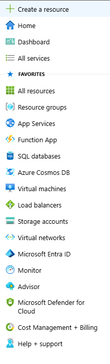
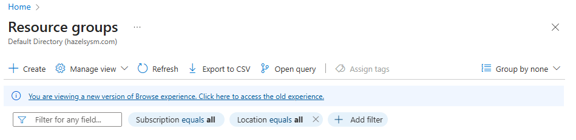
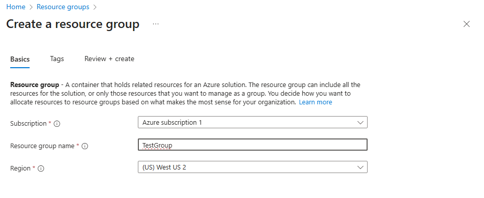
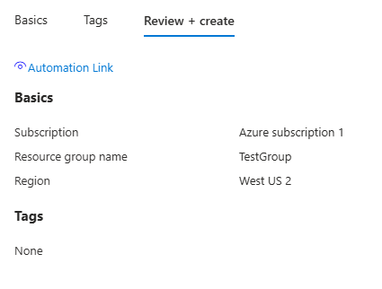

Azure Powershell Helpers
Installing AZ Module:
# Open Powershell as an Admin
Install-Module -Name Az -Scope CurrentUser -Repository PSGallery -Force
Login to Azure Account:
Connect-AzAccount
Create Resource Group
New-AzResourceGroup -Name "Resource Name" -Location "Location"
Create Resource Group in Azure
- Click Hamburger Dropdown and select Resource Groups:

- Click Create and Type in a Name

- Click Review & Create

- Click Create

- Your Group is Created!
Confirm Resource Group
Get-AzResourceGroup
ResourceGroupName : TestGroup
Location : westus2
ProvisioningState : Succeeded
Tags :
ResourceId : /subscriptions/a63485bf-c8f9-49c4-97d7-30b813966f8e/resourceGroups/TestGroup
Basic Script Deployment
New-AzResourceGroupDeployment `
-ResourceGroupName "TestGroup" `
-TemplateFile "testgroupvm.bicep" `
-TemplateParameterObject @{
auser="tuser"
apass="tpass"
}